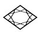
第十九章坐在我的办公室里，当爱因斯坦和牛顿沿着走廊来到我的房间门口时，我听到他们热烈讨论的声音。显然，下午的实验室参观给他们留下了深刻的印象。
我们讨论了一会儿CERN的大型加速器SPS和LEP，它们得名于Super Proton Synchrotron（超级质子同步加速器）和Large Electron Positron（大型正负电子对撞机）的字头缩写。正如名字所显示的那样，两台机器中的头一台用于加速质子。质子的总能量可以提高到差不多400GeV；依照爱因斯坦的公式，这相当于质子静止质量所对应能量的400多倍。同一台机器在加速质子的同时也加速质子的反粒子，通常称做反质子（antiproton）。（我们将进一步讨论反粒子，并且更一般地讨论反物质的概念。）用这种方式可以使质子和反质子迎头对撞，而且在这些剧烈的对撞中产生的粒子可以用特殊的探测装置来分析。这些粒子探测器以很多不同的方式测量粒子的径迹。
另一台机器，LEP，加速电子和它们的反粒子，通常称做正电子（positron）；它把每个粒子加速到大约50GeV的能量。在这里粒子探测器也是围绕着相互作用点来研究发生在LEP中的迎头对撞。像加速器本身一样，这些大规模的探测器被安装在地下隧道和大厅里面。
牛顿： 你的朋友，我们的导游，十分友善地给我们解释了加速器的基本特性。当他接下来谈论修建这些机器所要从事的研究项目时，他不断地提到“反粒子”和“反物质”。那家伙显然对他的谈话对象连最模糊的概念都没有，以为像我们这样两个理论家懂得所有有关反物质等类似的知识，因此他一句解释的话都没说。你会理解，我们没有问他任何问题，所以我不得不问问你：什么是反粒子？什么是反物质？
哈勒尔： 要回答那些问题，我就从剑桥说起吧。在20世纪20年代后期，一位名叫狄拉克（Paul A. M. Dirac）的年轻物理学家建立了当时快速发展的原子物理学及其基本理论量子力学和爱因斯坦的相对论之间的联系。顺便告诉你，牛顿教授，狄拉克后来在三一学院担任了曾经属于你的教授职位。
不久事情就显而易见了，要把这些不同的领域联系起来并不那么容易；不过在原子物理学中就大多数实际用途而言，无论如何没有必要关注相对论效应。在原子里面粒子的速度一般比光速小许多，所以空间和时间在原子物理学中扮演相当不同的角色，基本上就像在经典力学中那样。狄拉克并没有把太多精力花在寻找原子物理学中某些现象的新奇解释上，他更多地试图把他的思想作为原则问题来探求；他想要以这样一种方式表达对原子物理学的崭新见解，那就是它们可以依照相对论的观点一般化。
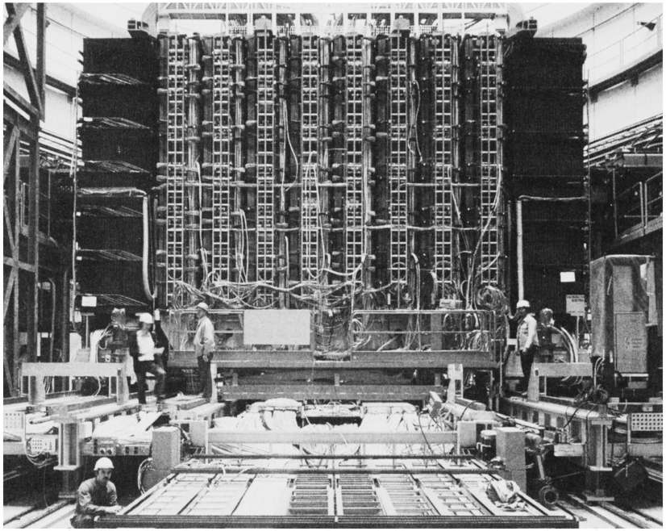
图19.1 在CERN用于研究质子—反质子高能对撞的大型探测器之一。（承蒙CERN惠允。）
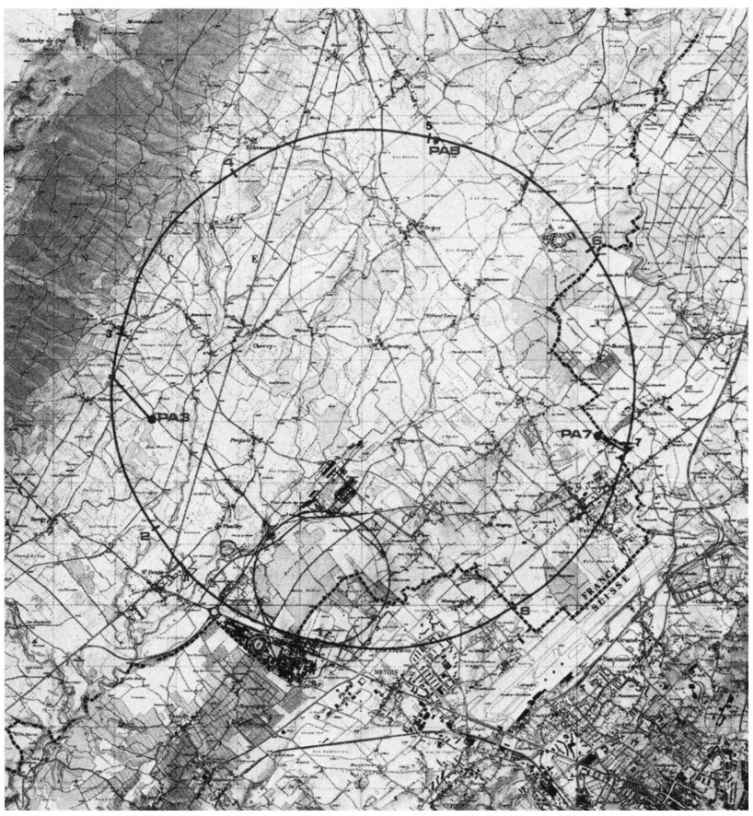
图19.2 LEP加速器被安置在一个27千米长的环状隧道内，隧道处于日内瓦机场和侏罗山脉之间倾斜的山谷的地平面之下。沿着圆环的标志表示电子和正电子之间能够发生对撞的相互作用区。小环标志着SPS加速器的隧道，下面密集的建筑群是严格意义上的实验室场所。LEP加速器自1989年以来一直在运转着。（承蒙CERN惠允。）
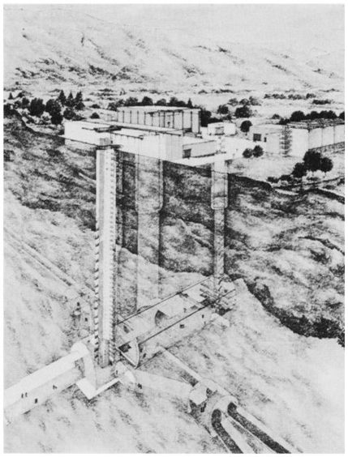
图19.3 艺术家视野下的LEP实验区之一。电子—正电子对撞发生在地下深处，所以大型粒子探测器不得不安置在地下大厅里。
爱因斯坦： 在相对论中，空间和时间之间其实不存在本质的差别。它们纠缠在一起分不开。我姑且认为狄拉克计划在量子力学的情况下解出这一关联的细节。
哈勒尔： 对。狄拉克只不过是从这样的假设出发：在涉及以接近于光速传播的粒子的所有情形中，都得以相同的方式处理空间和时间。这就是他1928年设法推导一个非常有趣的方程的方式，该方程描写的是如今所谓的狄拉克函数，确保了把相对论扩展到原子物理学。它的第一个应用就立即获得了意想不到的成功：它相当精确地描述了电子与磁场的相互作用。
之后不久，狄拉克注意到他的方程不仅能够正确地描写电子在原子力下的行为，而且它预言了一组新粒子的存在。这些新粒子具有和电子相同的质量，但是电荷相反——与电子的负电荷大小相等的正电荷。
狄拉克本人起初不愿意接受他的理论的所有结果，因为唯一带正电荷的原子组分是质子，其质量比电子质量大得多。狄拉克试图找到这一问题另外的解决方案。在很多不成功的尝试之后，他终于说服自己这些额外的粒子实际上应该与电子和质子并存。他把它们称做电子的反粒子。
狄拉克的电子理论的一个重要方面在于电子及其反粒子以完全对称的方式出现。它们可以相互交换，而没有发生任何显而易见的本质改变。
不过现在让我们离开欧洲转到位于帕萨迪纳的加州理工学院。20世纪30年代初期的加州理工学院，正在开展对宇宙线的详细研究。为了这一目的，其中一个叫安德森（Carl Anderson）的研究人员建造了一个云室。以当时的标准来衡量这个云室相当大了，可以用来观察和拍摄带电粒子穿过云室之后在里面留下的径迹。如果把一个这样的云室放到强磁场中，粒子就会以弯曲的轨迹穿过它。弯曲的程度和方向可用来确定粒子的质量和电荷。安德森观察到大量这样的径迹，确信它们都是由已知的粒子造成的——要么是带正电荷的质子，要么是带负电荷的电子。
1932年8月2日上午，安德森照常研究最新的云室径迹照片。不过那天他注意到一条轨迹，乍看起来像是电子的轨迹——它的质量结果等于电子质量。然而，径迹的弯曲是错的，它刚好与所期望的电子轨迹的弯曲方向相反。它的行为表现像是一个带正电荷的电子。
安德森的本能反应是检查他的仪器装置以排除所有可能的实验错误。他没有发现任何错误。不久以后他找到了更多的神秘粒子。它们的径迹有一些似乎突然中止了，就好像粒子忽然消失了一样。再没有什么好疑虑的了：电子有一个携带正电荷的孪生兄弟。安德森把他的新粒子称做正电子。
爱因斯坦： 换句话说，安德森发现了狄拉克所预言的粒子。
哈勒尔： 也是也不是。安德森在做他的实验那会儿，对狄拉克在剑桥做的理论工作一无所知。只有到了1933年，安德森发现的粒子才被认可为狄拉克已经猜想到会存在的反粒子。于是正电子被牢靠地确认为电子的反粒子，并记为e+ 。就像我说过的那样，它的质量等于电子的质量：
m （e+ ）＝m （e- ）=9.1091×10-31 kg=0.511MeV.
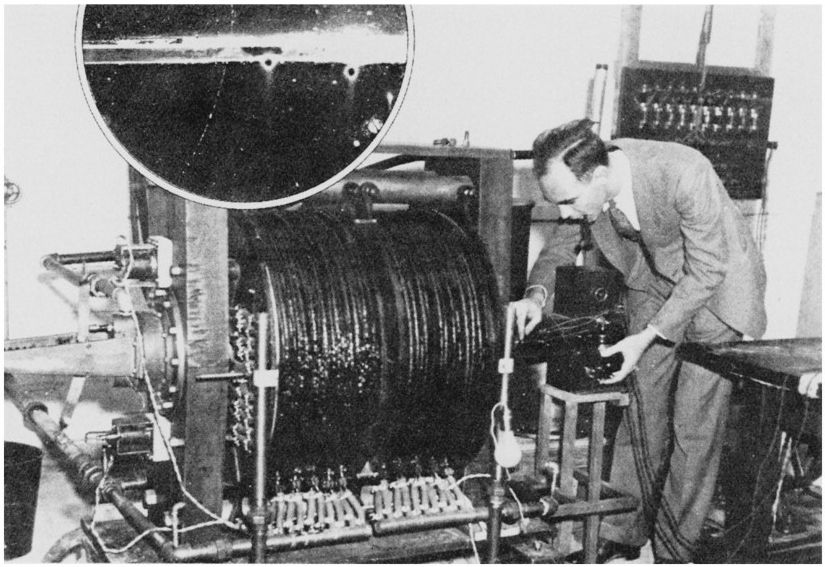
图19.4 安德森站在使他发现了正电子的云室旁。严格意义上的云室藏在黑线圈里面，后者为实验产生磁场。插图显示的是安德森最先发现的正电子径迹中的一条。（承蒙加州理工学院惠允。）
牛顿： 质子也有反粒子吗？
哈勒尔： 安德森的发现实际上是迈进一个全新领域的第一步，那就是反物质领域。今天我们知道每个粒子都有其反粒子。电中性的粒子有时就等同于它们的反粒子；比如说，光子是一个混杂粒子——它同时是本身的反粒子。
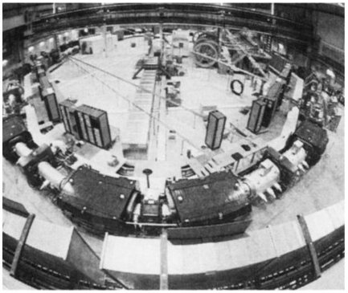
图19.5 在把反质子注入SPS加速器之前，CERN的反质子储存环利用磁场把反质子限制在它的环状真空室中。
所以质子也有反粒子，标记为
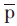
。反质子具有和质子相同的质量，但是电荷相反。它是在1955年发现的——不像正电子那样是在宇宙线中发现的，而是在伯克利的一个加速器实验中发现的。更晚些时候，中子的反粒子被发现了。如同中子，反中子是电中性的——它们不携带电荷。在CERN这儿，产生大量反质子的技术已经发展起来了。人们利用一个小型加速器把反质子注入大型SPS加速器，后者随后提高它们的能量，如同处理质子一样，直到反质子以接近于光速的速度运动。
爱因斯坦： 倘若我这儿有一个正电子和一个反质子，它们不就像电子和质子那样由于电荷相反而相互吸引了吗？果真如此的话，这不就意味着我可以从这些反粒子构造出某种东西吗？
哈勒尔： 当然可以。我们可以用那种方式制造出一种新元素，反氢。如果我们把反中子包括进来，我们也可以——在理论上——制造出更复杂的反元素，比如反氦或反铁，甚至反铀。不过正如我所说的，那只是在理论上；在实验上，没有人试图制造比反氘和反氦更重的反核子。尽管如此，我们应该知道在我们的宇宙中，所有物质在原则上——若非在实际上——都有其反物质。物质和反物质之间没有本质的差别，这是我们从狄拉克的理论中所获悉的重要思想之一。
牛顿： 你先前不是说一些正电子的径迹在云室中突然停止了吗？那儿发生了什么？粒子消失了？
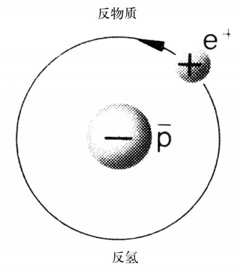
图19.6 反物质的最简单形式是反氢。它含有一个反质子和一个正电子。
爱因斯坦： 关于那些径迹，让我来问另外一个问题：它们从哪儿开始？在安德森的实验里正电子是从哪儿来的？如果它们会突然消失，它们也会突然出现。
哈勒尔： 你是绝对正确的。两种现象是有关联的，就像我们一会儿将看到的那样。不过先说说那些中断了的径迹：它们也可以由狄拉克的理论来解释。正如我提到的那样，该理论提供了一种相对论和原子物理学之间的有机结合，因此爱因斯坦的公式在这儿再次现身就没什么好奇怪的了。而且它是以一种令人难忘的方式起作用的。
让我们看看一个正电子和一个电子相互对撞。在对撞的一刹那，灾难降临这个微观世界——两个粒子相互湮没了。剩下的是以电磁辐射形式存在的能量，即光子。在这个湮没过程中，两个粒子的质量严格依照爱因斯坦的质能等价规则转化为光子的能量。
牛顿： 这向我们表明了安德森所看到的现象。每当他看见一个正电子的轨迹突然中断，那个正电子已经和一个电子碰撞并且二者已经湮没掉了。
哈勒尔： 实情刚好如此。狄拉克的理论甚至指明如何去计算湮没过程所产生的光子数目：通常会出来两个光子。安德森在大多数情况下看到的只是正电子的消失。他的云室不允许他观测以光速离开湮没点的两个光子——像光子这样的电中性粒子在云室里留不下径迹。
牛顿： 爱因斯坦，你赢了，粒子和反粒子只转化为光子，这种离奇的转化是你的公式的最极端结果。整个质量都转变成能量，而不是像核裂变或核聚变那样只有一小部分质量转化为能量。这就是我一直期待的！一个所有质量都转化为辐射能的过程终于有了。
爱因斯坦： 由于我们知道电子和正电子各自的质量，要确定两个光子之中每一个的能量就容易了。如果两个粒子缓慢地相遇，我们就可以忽略它们的动能，那么只有粒子的静止质量将发生转变。不过电子的静止质量是0.511MeV，所以我们如果在静止参考系观察该湮没过程，就能够预言离开湮没点的两个光子的能量，每一个必定为0.511MeV左右。
哈勒尔： 实情正是这样，理论预期和实验测量符合得惊人地好。在这方面，电子和正电子的湮没是对你的公式以及间接地对相对论最令人难忘的解释和说明。
爱因斯坦： 可是你还没有告诉我们正电子是从哪里来的。
哈勒尔： 我没有直接说出来，但是已经间接地表明了正电子的出处。我们刚才看到了一个电子和一个正电子自身是如何湮没成两个光子的。此处值得回顾一条物理学基本定律，它既适用于狄拉克的理论，也适用于牛顿力学和爱因斯坦的相对论：每一个微观过程都是可逆的。它通常被称做时间反演不变性。我们已经说过，当电子和正电子迎头相遇时，它们把所有的质量和能量都转化为两个光子。让我们把该过程转向，使得两个光子相互作用：相互作用可以导致两个光子转变成一个电子正电子对。注意这两个粒子先前并不存在。它们是从“虚无”创造出来的，或者更准确地说，是从能量产生的。这一产生过程恰好是电子正电子湮没的反过程。因此粒子的产生和湮没是密切相关的过程。
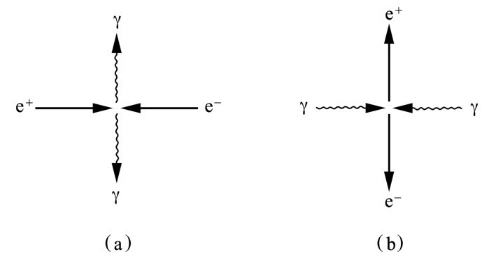
图19.7 （a）电子和它的反粒子正电子的湮没导致两个光子（或γ量子）发射出来。湮没粒子的能量等于发射出来的光子的能量。（b）反过来，两个对撞的光子可以产生一个电子—正电子对。依照爱因斯坦方程，只有在能量大到足以产生两个带质量粒子的条件下，该过程才会发生。
爱因斯坦： 这是古老法则的另一个版本：不破则不立，无死则无生。不过要记住，依照我的方程，你提到的粒子产生只有在两个光子的能量大到足以产生粒子的静止质量的条件下才会发生。
哈勒尔： 当然，两个光子必须有适当的能量，即至少2倍于0.511MeV的能量，来提供一个电子—正电子对的质量。倘若它们没有那么大的能量，就根本什么都不会发生，光子将只是擦肩而过，不会发生相互作用。
牛顿： 让我问另外一个问题吧。根据定义，电子和正电子具有相反但等量的电荷。在这方面它们的表现如同一个电子和一个质子。不过我如果把一个电子和一个质子放在一起，我就构造出一个氢原子。用一个电子—正电子对也许可以做类似的事情，对你来说这可能吗？换句话说，刚好在两个粒子湮没之前会存在一种原子结构吗？
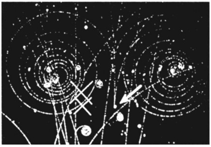
图19.8 一个电子—正电子对产生于电磁相互作用。箭头表示这对粒子事件形成的地点。在磁场中相反的轨迹弯曲是清晰可见的，它们是由电子和正电子相反的电荷造成的。
哈勒尔： 艾萨克爵士，你又一次想到我前头去了。这种类原子结构的确存在，它称做电子偶素（positronium）。只要一个电子和一个正电子缓慢地接近对方，它们就会处于电子偶素状态。它其实不是个原子；与氢原子不同，它没有原子核。电子和正电子具有相同的质量，所以两个粒子围绕着彼此运转。电子偶素的寿命很短：它产生后不到百万分之一秒就衰变成光子了，典型的情形是衰变成两个光子。
爱因斯坦： 所有这些新见识都是难以想象的。自从我发表了我的第一篇关于相对论的论文，对那一类物理学的思考就开始出现了。这个电子偶素的事情相当古怪。就想象一下吧，物质和反物质在一个微小的空间内被挤压在一起，在它们转化为纯辐射之前，它们仍然有时间在途中构成一种原子。
关于反物质，到目前为止我们讨论的只是在粒子相互作用中偶然产生的个别反粒子。不过我们也许应该考虑我们的宇宙某处更大数量的反物质，比如说反氢或反铁。倘若以某种方式把一大块反铁置于地球表面，它就会立即使它周围的普通物质消失。结果将会是巨大的爆炸，比一枚氢弹爆炸威力大得多。
哈勒尔： 那将依赖于物质和反物质被允许以多快的速度相互接近。当然了，如果我们把1千克的反物质装进一个含有等量普通物质的罐子里面，那么稍有不慎就会天塌地灭。然而，我们可以试着使湮没过程缓慢发生，甚至可以用它来创造能量。
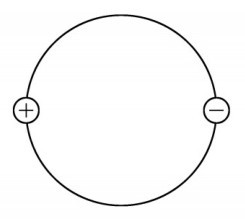
图19.9 电子偶素是一个类似于氢原子的物质与反物质的结构（更准确地说，是电子和正电子的结构）。两个粒子沿圆形轨道运动。在电子偶素“原子”产生之后不到百万分之一秒，它就衰变成两个或多个光子。
这在技术上不困难，因为物质和反物质的湮没不像核聚变，并不需要高温；这个过程发生起来相当容易。要给一个1000万人口的国家提供一整年所需的能量，只需要物质和反物质各1千克，相互缓慢湮没。该方案只有一个障碍——我们没有一大块反物质。考虑到所涉及的危险性，我们没有反物质也许是件幸事。
不过看看，外面天黑了。我们最好再来关心一下物质，一种可以吃的物质。我们可以饭后再回到反物质的话题。
我建议我们穿过国界到法国境内的一家餐馆进餐，我的同伴都赞同。我们上了车，动身前往侏罗山脉。